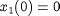
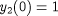
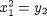

Once gPROMS has checked that the system is well-posed, square and of index 1, it checks the consistency of the initial conditions and identifies sub-systems that are over- or under-specified at t = 0. For example, consider the system shown in the gPROMS code below:
Example 3. Illustrative example: system with inconsistent initial conditions
#=============================================================== #MODEL mod1 VARIABLE x1, x2, y1, y2, y3 AS NoType EQUATION $x1 = x1*y1 ; $x2 = x1 + x2*y1 + y2 + 3*y3 ; x1^2 = y2 ; x2 = x1 + y1 + y2*y3 ; #=============================================================== #PROCESS proc UNIT mymod AS mod1 ASSIGN WITHIN mymod DO y3 := 1 ; END #within INITIAL WITHIN mymod DO x1 = 0 ; y2 = 1 ; END #within SOLUTIONPARAMETERS ReportingInterval := 1 ; SCHEDULE CONTINUE FOR 10
In this case, it is clear from inspection that the initial conditions,  and , are inconsistent due to the relationship . This is confirmed by the gPROMS output:
Executing process PROC... All 5 variables will be monitored during this simulation! Building mathematical problem description took 0.001 seconds. Loaded MA48 library Execution begins.... Variables Known : 1 Unknown : 4 Differential : 2 Algebraic : 2 Model equations : 4 Initial conditions : 2 Checking consistency of model equations and ASSIGN specifications... OK! Checking index of differential-algebraic equations (DAEs)... OK! Checking consistency of initial conditions... ERROR: Your initial conditions are inconsistent. At time t=0, the following 3 equation(s) involve only 2 unknown variable(s). Model Equation 3: MYMOD.X1^2 = MYMOD.Y2 ; Initial Condition 1: MYMOD.X1 = 0 ; Initial Condition 2: MYMOD.Y2 = 1 ; The 2 unknown(s) occuring in these 3 equations are: MYMOD.Y2 (ALGEBRAIC) MYMOD.X1 (STATE) Initialisation calculation failed. Execution of PROC fails prematurely.
Note that using the initial conditions:
INITIAL WITHIN mymod DO $x1 = 0 ; y2 = 1 ; END #within
for example, rectifies the problem.